첫 개점부터 웨이팅

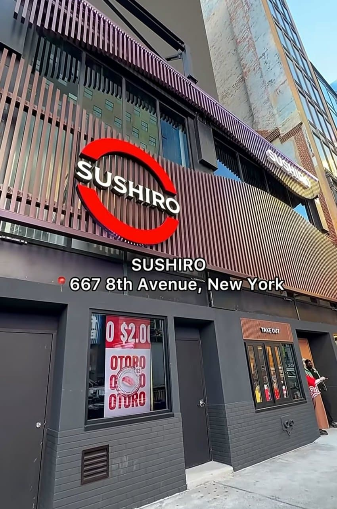
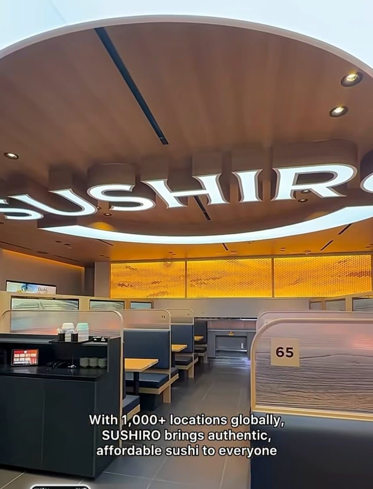
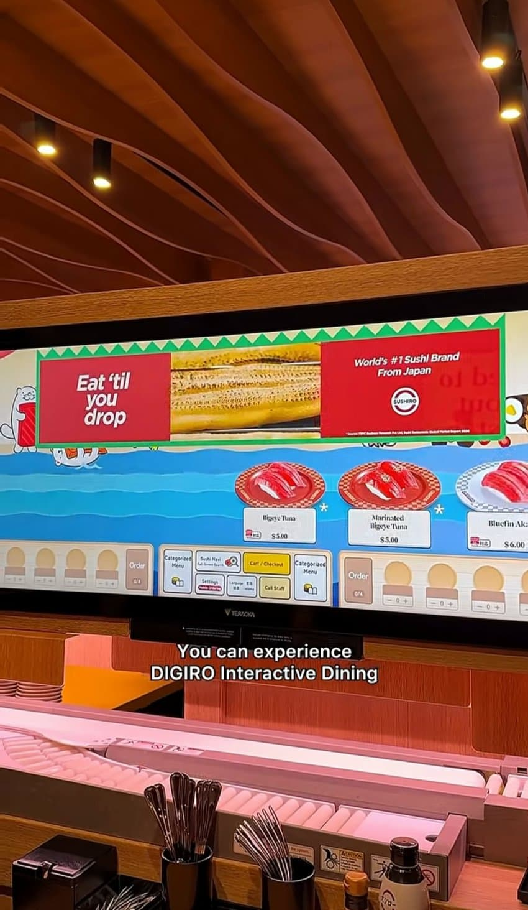
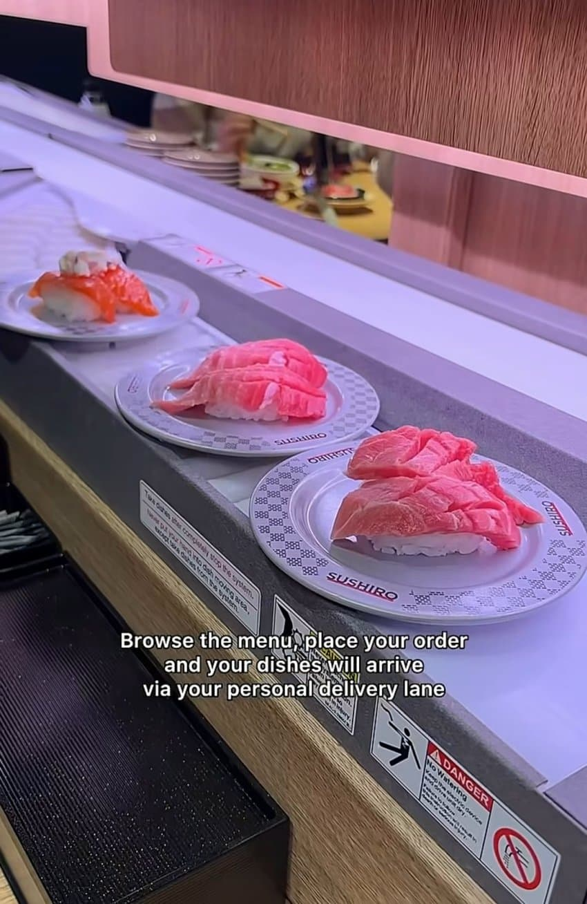
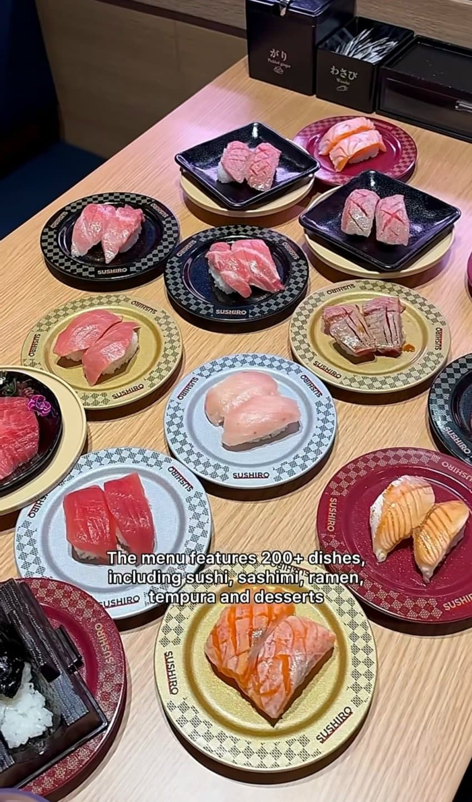
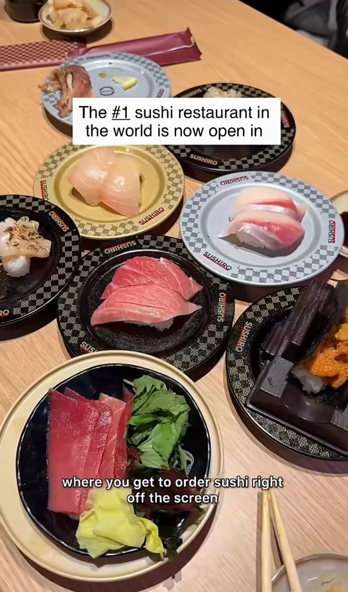
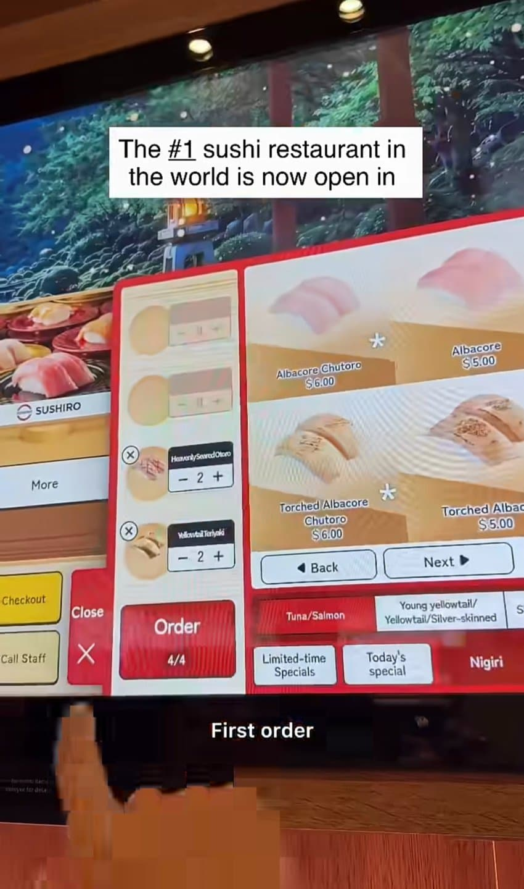
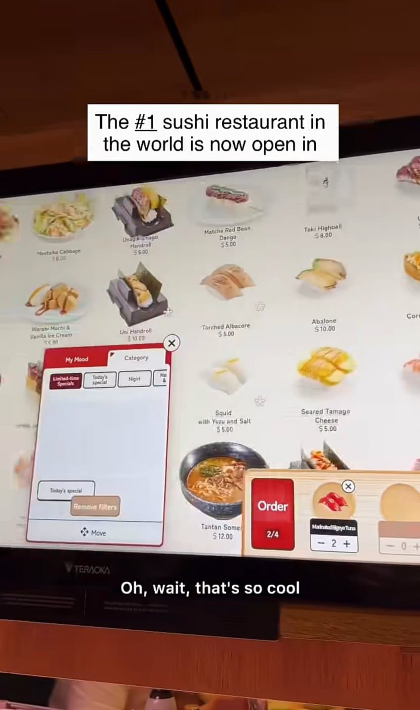
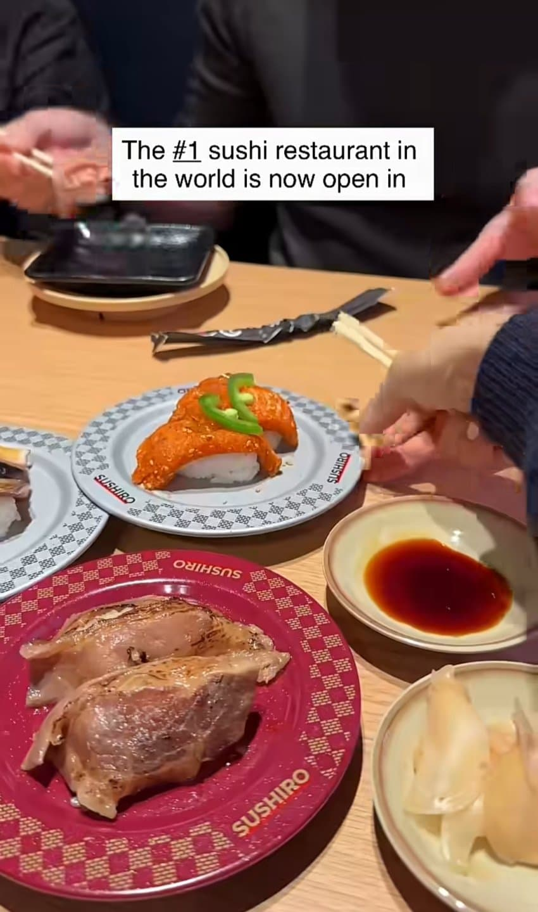
퀄리티도 꽤 좋다는듯...
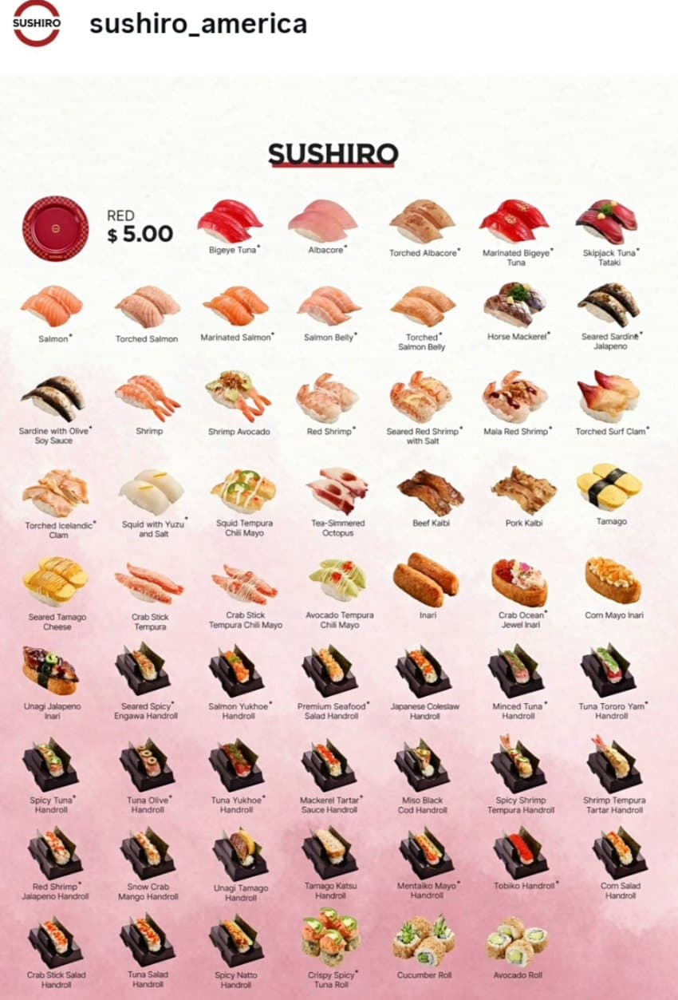
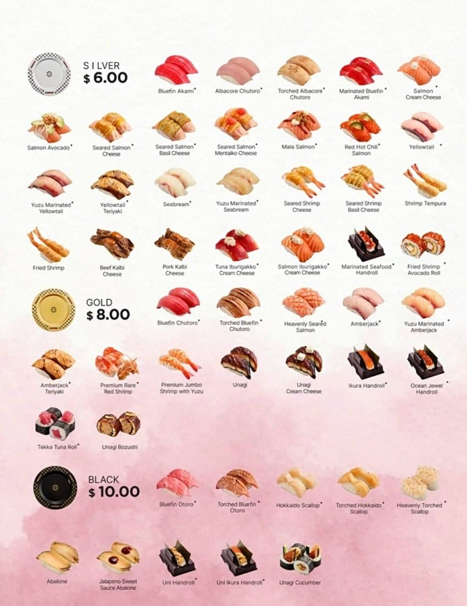
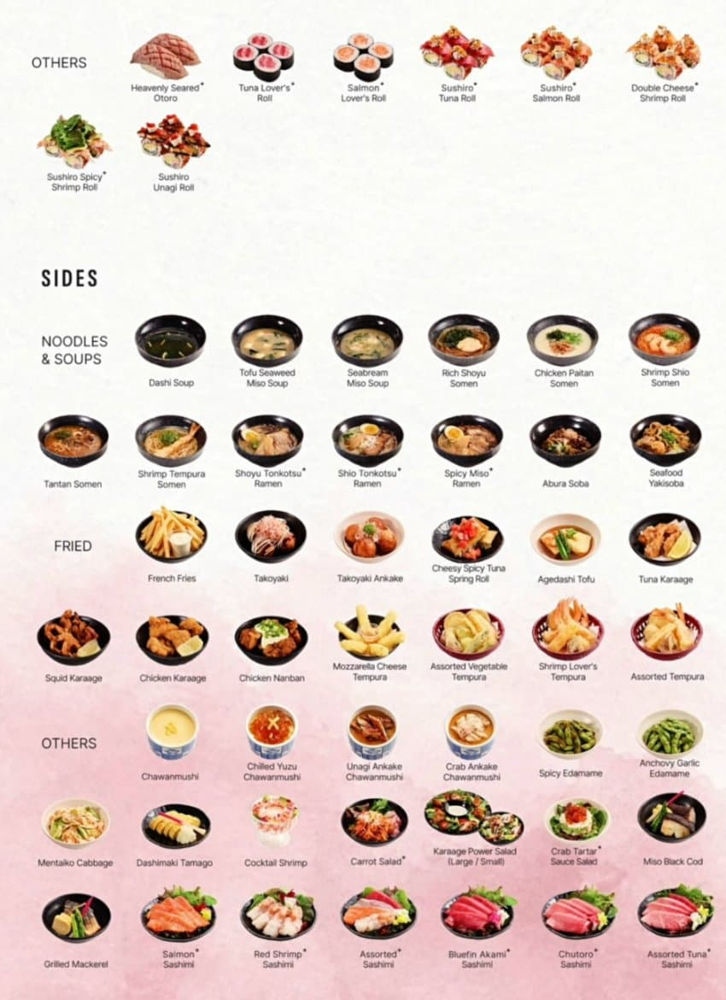
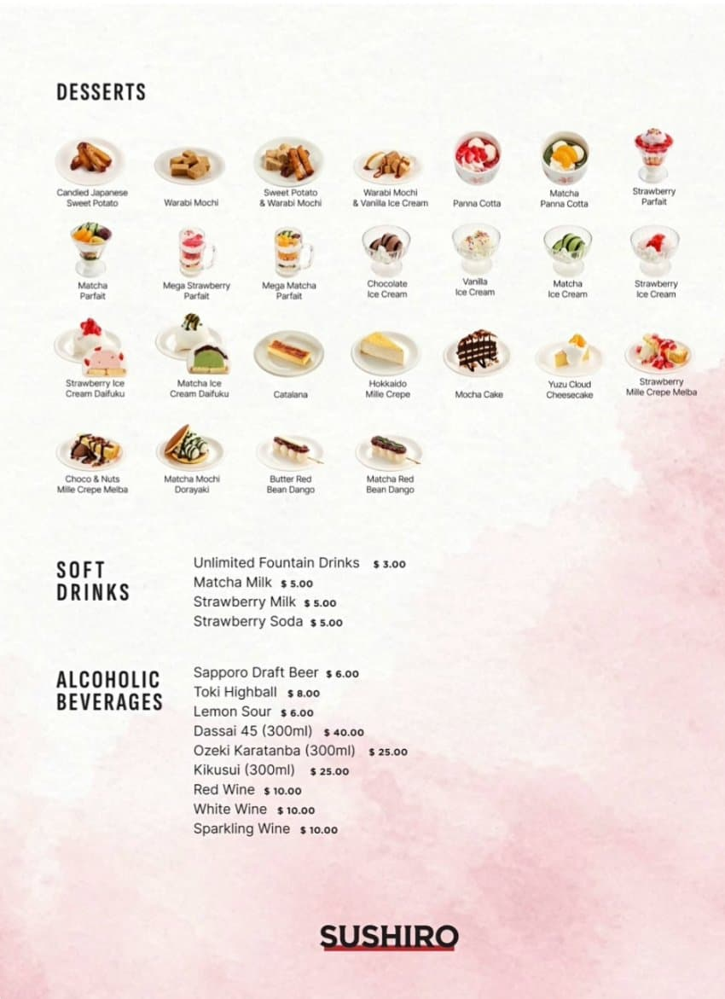
메뉴판













댓글
수집 당시 댓글 156개
ㅇㅇ · 11.21 10:55:29
ㅇㅇ · 11.21 10:55:32
· ㅇㅇ · 11.21 10:56:17
· ㅇㅇ · 11.21 10:57:03
· 고분 · 11.21 11:45:28
ㅇㅇ · 11.21 10:55:40
ㅇㅇ · 11.21 10:55:41
ㅇㅇ · 11.21 10:55:49
· ㅇㅇ · 11.21 10:57:39
ㅇㅇ · 11.21 10:56:00
ㅇㅇ · 11.21 10:56:20
ㅇㅇ · 11.21 10:56:28
ㅇㅇ · 11.21 10:56:41
내똥집엔크리넥스 · 11.21 10:57:06
알파카목장 · 11.21 10:57:22
ㅇㅇ · 11.21 10:57:26
ㅇㅇ · 11.21 10:57:47
ㅁd · 11.21 10:57:48
ㅇㅇ · 11.21 10:58:41
ㅇㅇ · 11.21 10:58:41
ㅇㅇ · 11.21 10:59:08
ㅇㅇ · 11.21 10:59:37
ㅇㅇ · 11.21 10:59:46
192.168.* · 11.21 11:01:02
노은지 · 11.21 11:01:16
· ㅇㅇ · 11.21 11:07:03
ㅇㅇ · 11.21 11:02:17
· ㅇㅇ · 11.21 11:05:54
ㅇ · 11.21 11:06:01
ㅇㅇ · 11.21 11:06:14
ㅇㅇ · 11.21 11:06:18
ㅇㅇ · 11.21 11:06:56
ㅇㅇ · 11.21 11:07:25
· ㅇㅇ · 11.21 11:09:35
· ㅇㅇ · 11.21 11:12:09
ㅇㅇ · 11.21 11:08:23
· 겐쉰프 · 11.21 11:14:43
· 겐쉰프 · 11.21 11:15:20
· ㅇㅇ · 11.21 11:28:13
· ㅇㅇ · 11.21 11:35:06
· 겐쉰프 · 11.21 11:43:21
· ㅇㅇ · 11.21 11:44:42
ㅇㅇ · 11.21 11:09:40
ㅇㅇ · 11.21 11:09:49
ㅇㅇ · 11.21 11:10:34
· ㅇㅇ · 11.21 11:15:26
· ㅇㅇ · 11.21 11:16:15
· 르붕이 · 11.21 11:18:35
ㅇㅇ · 11.21 11:11:02
· 겐쉰프 · 11.21 11:15:34
· ㅇㅇ · 11.21 11:20:29
ㅇㅇ · 11.21 11:11:29
ㅇㅇ · 11.21 11:11:52
· 겐쉰프 · 11.21 11:17:18
· ㅇㅇ · 11.21 11:20:55
· ㅇㅇ · 11.21 11:35:55
ㅇㅇ · 11.21 11:12:15
1111 · 11.21 11:12:26
해갤러 · 11.21 11:14:48
· 겐쉰프 · 11.21 11:16:03
· 겐쉰프 · 11.21 11:16:28
· 해갤러 · 11.21 11:20:20
푸슈 · 11.21 11:15:57
ㅇㅇ · 11.21 11:17:55
· ㅇㅇ · 11.21 11:18:01
ㅇㅇ · 11.21 11:19:21
· ㅇㅇ · 11.21 11:21:52
ㅇㅇ · 11.21 11:19:59
· ㅇㅇ · 11.21 11:22:31
· Jasmin. · 11.21 11:25:12
ㅇㅇㅇ · 11.21 11:20:58
· Jasmin. · 11.21 11:25:42
heyzle · 11.21 11:22:27
ㅇㅇ · 11.21 11:24:45
DC전사쿠루미쨩 · 11.21 11:25:21
ㅇㅇㅇ · 11.21 11:26:26
ㅇㅇ · 11.21 11:28:18
ㅇㅇ · 11.21 11:29:59
ㅇㅇ · 11.21 11:30:51
ㅇㅇ · 11.21 11:35:24
ㅇㅇ · 11.21 11:36:04
ㅇㅇ · 11.21 11:39:02
ㅇㅇ · 11.21 11:39:16
고분 · 11.21 11:44:30
ㅇㅇ · 11.21 11:46:50
ㅇㅇ · 11.21 11:49:43
ㅇㅇ · 11.21 11:51:28
· ㅇㅇ · 11.21 11:53:36
ㅇㅇ · 11.21 11:52:33
· 겐쉰프 · 11.21 12:07:44
· 겐쉰프 · 11.21 12:07:58
ㅇㅇ · 11.21 11:53:09
ㅇㅇ · 11.21 11:57:26
ㅇㅇ · 11.21 11:58:38
ㅇㅇ · 11.21 12:04:00
ㅇㅇ · 11.21 12:04:05
나옹이 · 11.21 12:05:24
앙파상 · 11.21 12:06:02
ㅇㅇ · 11.21 12:07:14
· ㅇㅇ · 11.21 12:07:36
ㅇㅇ · 11.20 18:58:32
· ㅇㅇ · 11.20 18:59:05
쿠루스소마 · 11.20 18:59:00
· 수류탄이야 · 11.20 19:00:58
· 너는ㅄ이맞습니다 · 11.21 11:27:21
과테스트 · 11.20 18:59:11
· oo · 11.21 11:20:45
ㅇㅇ · 11.20 18:59:16
· 어이없어행복해 · 11.20 19:02:44
· ㅇㅇ · 11.20 19:03:15
· ㅇㅇ · 11.20 19:17:05
· ㅇㅇ · 11.21 11:07:31
· OMG · 11.21 11:23:14
ㅇㅇ · 11.20 18:59:38
ㅇㅇ · 11.20 18:59:51
· ㅇㅇ · 11.21 10:55:51
ㅇㅇ · 11.20 19:00:21
· ㅇㅇ · 11.20 19:01:03
· ㅇㅇ · 11.21 10:55:25
ㅇㅇ · 11.20 19:00:21
· ㅇㅇ · 11.20 19:01:08
· ㅇㅇ · 11.20 19:02:16
· ㅇㅇ · 11.20 19:03:39
· ㅇㅇ · 11.21 10:52:21
· ㅇㅇ · 11.21 11:27:47
ㅇㅇ · 11.20 19:00:25
ㅇㅇ · 11.20 19:00:28
ㅇㅇ · 11.20 19:01:54
ㅇㅇ · 11.20 19:25:09
· ㅇㅇ · 11.21 11:32:38
ㅇㅇ · 11.20 19:58:37
봇치쟝 · 11.21 10:50:49
· ㅇㅇ · 11.21 10:52:02
· ㅇㅇ · 11.21 11:23:54
· ㅇㅇ · 11.21 11:33:06
ㅇㅇ · 11.21 10:51:14
· 겐쉰프 · 11.21 10:56:41
ㅇㅇ · 11.21 10:52:02
かなたん · 11.21 10:52:10
ㅇㅇ · 11.21 10:53:07
· ㅇㅇ · 11.21 11:47:13
ㅇㅇ · 11.21 10:53:09
· ㅇㅇ · 11.21 11:01:13
· ㅇㅇ · 11.21 11:03:03
· ㅇㅇ · 11.21 11:29:25
· ㅇㅇ · 11.21 11:32:17
ㅇㅇ · 11.21 10:54:10
· ㅇㅇ · 11.21 10:59:02
· ㅇㅇ · 11.21 11:04:36
· ㅇㅇ · 11.21 11:55:47
ㅇㅇ · 11.21 10:54:36
· 겐쉰프 · 11.21 10:56:51
ㅇㅇ · 11.21 10:54:41
ㅇㅇ · 11.21 10:54:48
ㅇㅇ · 11.21 10:54:59
ㅇㅇ · 11.21 10:55:26